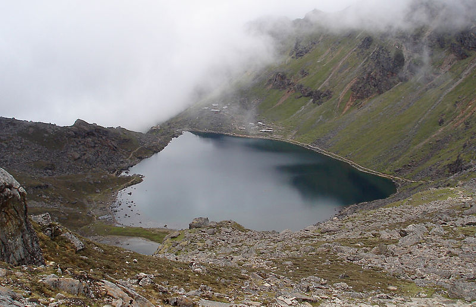

Gosaikunda,also spelled Gosainkunda and Gosain Kunda is an alpine freshwater oligotrophic lake in Nepal's Langtang National Park,
located at an altitude of 4,380 m (14,370 ft) in the Rasuwa District with a surface of 13.8 ha (34 acres). Together with associated lakes,
The lake melts and sips down to form the Trishuli River and remains frozen for six months in winter October to June. There are 108 lakes in this area,
small to medium in size. The challenging Lauribina La at an altitude of 4,610 m (15,120 ft) is on its outskirts.
Gosaikunda is a significant place of interest on the Dhunche-Helambu trekking route. This trek adjoins the famous Langtang Valley trek in the same district. Both treks can be combined. Basic accommodation is quite easily available. Tea houses offer a variety of food and snacks. The trek to Gosaikunda starts in Dhunche Village or Syabru Besi in the Langtang Himal, or in Sundarijal in the Kathmandu Valley. When starting from Dhunche, the first day involves a long steady climb to reach Chandan Bari at an altitude of about 3,200 m (10,500 ft). Laurebinayak at about 3,700 m (12,100 ft) can be reached on the second day. At this point, some trekkers choose to climb ahead to Gosaikunda, though altitude sickness is a concern as the ascent is rather steep. Many trekkers choose to stay at Laurebinayak, which also provides sunset and sunrise views of the Langtang and Ganesh Himal. The descent from Gosaikund to Sundarijal (?????????) takes about four days and involves a short climb to Laurebina La at 4,610 m (15,120 ft), a rapid descent to Phedi and onwards to Ghopte. Depending on pace, there are options to stay at Thadepati, Mangengoth, Kutumsang and at many villages farther downhill. The trails are well marked, except between Ghopte and Thadepati.
